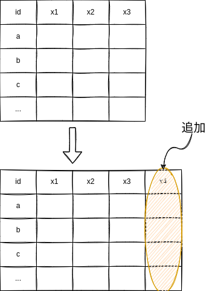
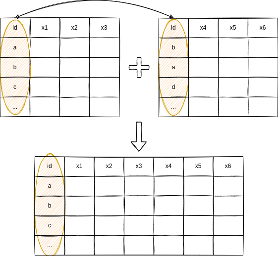

14 データの追加
前回は変数を選択したり、観察を選択したりと、データから一部を取り出す作業を学びました。今回は逆にデータを増やす作業を学びます。
14.1 変数の作成
データフレームを拡張する方法の一つは変数を増やすことです。変数を増やすためには、
- 既存のデータフレームの変数を用いて新しい変数を作成するか、
- 別のデータフレームと結合する
の2通りの方法があります。まずは、前者について学びます。

14.1.1 四則演算
一般的な四則演算が実行可能です。例えば、東大朝日の2017年衆議院選挙の有権者調査のコードブックを見てみると、問23で政策に対する賛否を聞いています（質問文は間違っていますが）。特に、(1)から(4)は外交政策についてタカ派かハト派かを表しています。
そこで、これらの変数を足し合わせることでハト派度合いを表す変数を作りたいと思います。
- ただし、(4)については点数が高いほうがタカ派を意味するので、引き算します。
- ついでに不要な変数も除去しておきます。
R (base)
# A tibble: 6 × 5
Q23_1 Q23_2 Q23_3 Q23_4 dovish
<dbl> <dbl> <dbl> <dbl> <dbl>
1 2 3 2 2 5
2 2 3 2 4 3
3 3 4 2 2 7
4 2 1 2 1 4
5 4 3 2 2 7
6 3 4 5 1 11R (tidyverse)
# A tibble: 6 × 5
Q23_1 Q23_2 Q23_3 Q23_4 dovish
<dbl> <dbl> <dbl> <dbl> <dbl>
1 2 3 2 2 5
2 2 3 2 4 3
3 3 4 2 2 7
4 2 1 2 1 4
5 4 3 2 2 7
6 3 4 5 1 11Python (pandas)
df_voter2017 = pd.read_csv("data/2017UTASV20200326.csv", encoding="Shift-JIS", na_values="99")
df_voter2017 = df_voter2017.loc[:,["Q23_1", "Q23_2", "Q23_3", "Q23_4"]]
df_voter2017["dovish"] = df_voter2017["Q23_1"] + df_voter2017["Q23_2"] + df_voter2017["Q23_3"] - df_voter2017["Q23_4"]
df_voter2017.head() Q23_1 Q23_2 Q23_3 Q23_4 dovish
0 2.0 3.0 2.0 2.0 5.0
1 2.0 3.0 2.0 4.0 3.0
2 3.0 4.0 2.0 2.0 7.0
3 2.0 1.0 2.0 1.0 4.0
4 4.0 3.0 2.0 2.0 7.0Python (polars)
| Q23_1 | Q23_2 | Q23_3 | Q23_4 | dovish |
|---|---|---|---|---|
| i64 | i64 | i64 | i64 | i64 |
| 2 | 3 | 2 | 2 | 5 |
| 2 | 3 | 2 | 4 | 3 |
| 3 | 4 | 2 | 2 | 7 |
| 2 | 1 | 2 | 1 | 4 |
| 4 | 3 | 2 | 2 | 7 |
ここでもtidyverseとpolars、R標準関数とpandasの共通性が見て取れます。つまり、前者ではmutate()ないしwith_columns()内で新しい変数を定義しています。一方で後者は存在しない変数を参照して、そこに代入することで新しい変数を作成しています。
なお、+や-以外にも四則演算は可能です。
| 計算 | R | Python |
|---|---|---|
| 足し算 | + |
+ |
| 引き算 | - |
- |
| 掛け算 | * |
* |
| 割り算 | / |
/ |
| 累乗 | ^ |
** |
| 割り算の余り | %% |
% |
| 割り算の商 | %/% |
// |
14.1.2 尺度の反転
ところで、先程の4つの設問では賛成が1、反対が5となる変数でした。そして、(1)から(3)は賛成のほうがタカ派であり、(4)は反対の方がタカ派と言えそうでした。
そうすると、(4)でも反対が1、賛成が5となるように尺度を反転させたくなるのが人情です。このような場合、「最大値から元の変数を引いて最小値を足す」ことで反転させることができます。そのような反転させた(4)の回答をQ23_4newとして作ってみます。
R (base)
df_voter2017 <- read_csv("data/2017UTASV20200326.csv", locale = locale(encoding = "Shift-JIS"), na = "99")
df_voter2017 <- df_voter2017[,c("Q23_1", "Q23_2", "Q23_3", "Q23_4")]
df_voter2017$Q23_4new <- max(df_voter2017$Q23_4) - df_voter2017$Q23_4 + min(df_voter2017$Q23_4)
df_voter2017$dovish <- df_voter2017$Q23_1 + df_voter2017$Q23_2 + df_voter2017$Q23_3 + df_voter2017$Q23_4new
head(df_voter2017)# A tibble: 6 × 6
Q23_1 Q23_2 Q23_3 Q23_4 Q23_4new dovish
<dbl> <dbl> <dbl> <dbl> <dbl> <dbl>
1 2 3 2 2 NA NA
2 2 3 2 4 NA NA
3 3 4 2 2 NA NA
4 2 1 2 1 NA NA
5 4 3 2 2 NA NA
6 3 4 5 1 NA NAQ23_4newが全てNAとなっています。なぜなら、Q23_4に欠損値が含まれており、この場合は最大値も最小値も欠損値になってしまうからです。したがって、na.rm = TRUEとすることで欠損値を除外して最大値と最小値を求めます。
R (base)
df_voter2017 <- read_csv("data/2017UTASV20200326.csv", locale = locale(encoding = "Shift-JIS"), na = "99")
df_voter2017 <- df_voter2017[,c("Q23_1", "Q23_2", "Q23_3", "Q23_4")]
df_voter2017$Q23_4new <- max(df_voter2017$Q23_4, na.rm = TRUE) - df_voter2017$Q23_4 + min(df_voter2017$Q23_4, na.rm = TRUE)
df_voter2017$dovish <- df_voter2017$Q23_1 + df_voter2017$Q23_2 + df_voter2017$Q23_3 + df_voter2017$Q23_4new
head(df_voter2017)# A tibble: 6 × 6
Q23_1 Q23_2 Q23_3 Q23_4 Q23_4new dovish
<dbl> <dbl> <dbl> <dbl> <dbl> <dbl>
1 2 3 2 2 4 11
2 2 3 2 4 2 9
3 3 4 2 2 4 13
4 2 1 2 1 5 10
5 4 3 2 2 4 13
6 3 4 5 1 5 17R (tidyverse)
# A tibble: 6 × 6
Q23_1 Q23_2 Q23_3 Q23_4 Q23_4new dovish
<dbl> <dbl> <dbl> <dbl> <dbl> <dbl>
1 2 3 2 2 4 11
2 2 3 2 4 2 9
3 3 4 2 2 4 13
4 2 1 2 1 5 10
5 4 3 2 2 4 13
6 3 4 5 1 5 17Python (pandas)
df_voter2017 = pd.read_csv("data/2017UTASV20200326.csv", encoding="Shift-JIS", na_values="99")
df_voter2017 = df_voter2017.loc[:,["Q23_1", "Q23_2", "Q23_3", "Q23_4"]]
df_voter2017["Q23_4new"] = df_voter2017["Q23_4"].max() - df_voter2017["Q23_4"] + df_voter2017["Q23_4"].min()
df_voter2017["dovish"] = df_voter2017["Q23_1"] + df_voter2017["Q23_2"] + df_voter2017["Q23_3"] + df_voter2017["Q23_4new"]
df_voter2017.head() Q23_1 Q23_2 Q23_3 Q23_4 Q23_4new dovish
0 2.0 3.0 2.0 2.0 4.0 11.0
1 2.0 3.0 2.0 4.0 2.0 9.0
2 3.0 4.0 2.0 2.0 4.0 13.0
3 2.0 1.0 2.0 1.0 5.0 10.0
4 4.0 3.0 2.0 2.0 4.0 13.0Python (polars)
df_voter2017 = (
pl.read_csv("data/2017UTASV20200326.csv", encoding="Shift-JIS", null_values="99")
.select(["Q23_1", "Q23_2", "Q23_3", "Q23_4"])
.with_columns(Q23_4new = pl.col("Q23_4").max() - pl.col("Q23_4") + pl.col("Q23_4").min())
.with_columns(dovish = pl.col("Q23_1") + pl.col("Q23_2") + pl.col("Q23_3") + pl.col("Q23_4new"))
)
df_voter2017.head()| Q23_1 | Q23_2 | Q23_3 | Q23_4 | Q23_4new | dovish |
|---|---|---|---|---|---|
| i64 | i64 | i64 | i64 | i64 | i64 |
| 2 | 3 | 2 | 2 | 4 | 11 |
| 2 | 3 | 2 | 4 | 2 | 9 |
| 3 | 4 | 2 | 2 | 4 | 13 |
| 2 | 1 | 2 | 1 | 5 | 10 |
| 4 | 3 | 2 | 2 | 4 | 13 |
14.1.3 条件に基づく変数
14.1.3.1 条件が一つの場合
四則演算以外にも条件に基づいて新しい変数を作成することもできます。例えば、先ほど作ったハト派変数について、「平均値よりも大きければハト派、そうでなければタカ派」とする変数を作ってみます。
R (base)
df_voter2017 <- read_csv("data/2017UTASV20200326.csv", locale = locale(encoding = "Shift-JIS"), na = "99")
df_voter2017 <- df_voter2017[,c("Q23_1", "Q23_2", "Q23_3", "Q23_4")]
df_voter2017$Q23_4new <- max(df_voter2017$Q23_4, na.rm = TRUE) - df_voter2017$Q23_4 + min(df_voter2017$Q23_4, na.rm = TRUE)
df_voter2017$dovish <- df_voter2017$Q23_1 + df_voter2017$Q23_2 + df_voter2017$Q23_3 + df_voter2017$Q23_4new
df_voter2017$dov_bin <- ifelse(df_voter2017$dovish > mean(df_voter2017$dovish, na.rm = TRUE), "dove", "hawk")
head(df_voter2017)# A tibble: 6 × 7
Q23_1 Q23_2 Q23_3 Q23_4 Q23_4new dovish dov_bin
<dbl> <dbl> <dbl> <dbl> <dbl> <dbl> <chr>
1 2 3 2 2 4 11 hawk
2 2 3 2 4 2 9 hawk
3 3 4 2 2 4 13 dove
4 2 1 2 1 5 10 hawk
5 4 3 2 2 4 13 dove
6 3 4 5 1 5 17 dove R (tidyverse)
df_voter2017 <- read_csv("data/2017UTASV20200326.csv", locale = locale(encoding = "Shift-JIS"), na = "99") |>
select(Q23_1, Q23_2, Q23_3, Q23_4) |>
mutate(Q23_4new = max(Q23_4, na.rm = TRUE) - Q23_4 + min(Q23_4, na.rm = TRUE),
dovish = Q23_1 + Q23_2 + Q23_3 + Q23_4new,
dov_bin = if_else(dovish > mean(dovish, na.rm = TRUE), "dove", "hawk"))
head(df_voter2017)# A tibble: 6 × 7
Q23_1 Q23_2 Q23_3 Q23_4 Q23_4new dovish dov_bin
<dbl> <dbl> <dbl> <dbl> <dbl> <dbl> <chr>
1 2 3 2 2 4 11 hawk
2 2 3 2 4 2 9 hawk
3 3 4 2 2 4 13 dove
4 2 1 2 1 5 10 hawk
5 4 3 2 2 4 13 dove
6 3 4 5 1 5 17 dove Python (pandas)
import numpy as np
df_voter2017 = pd.read_csv("data/2017UTASV20200326.csv", encoding="Shift-JIS", na_values="99")
df_voter2017 = df_voter2017.loc[:,["Q23_1", "Q23_2", "Q23_3", "Q23_4"]]
df_voter2017["Q23_4new"] = df_voter2017["Q23_4"].max() - df_voter2017["Q23_4"] + df_voter2017["Q23_4"].min()
df_voter2017["dovish"] = df_voter2017["Q23_1"] + df_voter2017["Q23_2"] + df_voter2017["Q23_3"] + df_voter2017["Q23_4new"]
df_voter2017["dov_bin"] = np.where(df_voter2017["dovish"] > df_voter2017["dovish"].mean(), "dove", "hawk")
df_voter2017.head() Q23_1 Q23_2 Q23_3 Q23_4 Q23_4new dovish dov_bin
0 2.0 3.0 2.0 2.0 4.0 11.0 hawk
1 2.0 3.0 2.0 4.0 2.0 9.0 hawk
2 3.0 4.0 2.0 2.0 4.0 13.0 dove
3 2.0 1.0 2.0 1.0 5.0 10.0 hawk
4 4.0 3.0 2.0 2.0 4.0 13.0 dovenumpyというパッケージを使います。
Python (polars)
df_voter2017 = (
pl.read_csv("data/2017UTASV20200326.csv", encoding="Shift-JIS", null_values="99")
.select(["Q23_1", "Q23_2", "Q23_3", "Q23_4"])
.with_columns(Q23_4new = pl.col("Q23_4").max() - pl.col("Q23_4") + pl.col("Q23_4").min())
.with_columns(dovish = pl.col("Q23_1") + pl.col("Q23_2") + pl.col("Q23_3") + pl.col("Q23_4new"))
.with_columns(dov_bin = pl.when(pl.col("dovish") > pl.col("dovish").mean()).then(pl.lit("dove")).otherwise(pl.lit("hawk")))
)
df_voter2017.head()| Q23_1 | Q23_2 | Q23_3 | Q23_4 | Q23_4new | dovish | dov_bin |
|---|---|---|---|---|---|---|
| i64 | i64 | i64 | i64 | i64 | i64 | str |
| 2 | 3 | 2 | 2 | 4 | 11 | "hawk" |
| 2 | 3 | 2 | 4 | 2 | 9 | "hawk" |
| 3 | 4 | 2 | 2 | 4 | 13 | "dove" |
| 2 | 1 | 2 | 1 | 5 | 10 | "hawk" |
| 4 | 3 | 2 | 2 | 4 | 13 | "dove" |
- 変数に文字列を代入するためには
pl.lit()を使います。
長くて分かりにくいですが、基本的な構造はいずれも同じです。Rの標準関数の場合はifelse()、tidyverseの場合はif_else()、pandasではnumpyのnp.where()、polarsではwhen().then().otherwise()を使います。
まず最初に条件式を入力し（ハト派度合いが平均値以上）、それに合致する場合は最初の値doveを代入し、合致しない場合は次の値hawkを代入しています。
14.1.3.2 条件が複数の場合
条件が複数ある場合、つまり条件1に当てはまる場合はA、条件2に当てはまる場合はB、条件3に当てはまる場合はC……というような変数を作る場合は、次のように書くのが便利です。例えば、F2という変数は年代を表していますが、10代・20代を若者、30代から50代を中高年、60代以上を高齢者とするような変数を作ってみます。
tidyverseではcase_when()を使います。条件式 ~ 変数の値とします。条件に合致しないものに対しては条件式をTRUEとします。
R (tidyverse)
# A tibble: 6 × 2
F2 generation
<dbl> <chr>
1 4 middle
2 5 middle
3 3 middle
4 7 senior
5 7 senior
6 7 senior polarsではwhen().then()を繰り返し、最後にotherwise()で条件に合致しないものの値を決めます。
Python (polars)
df_voter2017 = (
pl.read_csv("data/2017UTASV20200326.csv", encoding="Shift-JIS", null_values="99")
.select(["F2"])
.with_columns(generation = pl.when(pl.col("F2") <= 2)
.then(pl.lit("youth"))
.when((3 <= pl.col("F2")) & (pl.col("F2") <= 5))
.then(pl.lit("middle"))
.otherwise(pl.lit("senior")))
)
df_voter2017.head()| F2 | generation |
|---|---|
| i64 | str |
| 4 | "middle" |
| 5 | "middle" |
| 3 | "middle" |
| 7 | "senior" |
| 7 | "senior" |
14.2 データの結合（変数の追加）
これまでは、既存のデータフレームの情報を使って新しい変数を作成してきました。次は、複数のデータセットを結合したいと思います。

前回使った民主主義度のデータに国連総会の投票行動から推計された国家の理想点（政策位置）のデータを結合しようと思います。
IdealpointestimatesAll_Sep2023.csvの右のダウンロードボタンを押して、“Comma Spearated Values”を選択して、csvファイルをダウンロードします。
それぞれのデータの見てみます（ここではRのみ）。
# A tibble: 6 × 37
p5 cyear ccode scode country year flag fragment democ autoc polity
<dbl> <dbl> <dbl> <chr> <chr> <dbl> <dbl> <dbl> <dbl> <dbl> <dbl>
1 0 7001800 700 AFG Afghanistan 1800 0 NA 1 7 -6
2 0 7001801 700 AFG Afghanistan 1801 0 NA 1 7 -6
3 0 7001802 700 AFG Afghanistan 1802 0 NA 1 7 -6
4 0 7001803 700 AFG Afghanistan 1803 0 NA 1 7 -6
5 0 7001804 700 AFG Afghanistan 1804 0 NA 1 7 -6
6 0 7001805 700 AFG Afghanistan 1805 0 NA 1 7 -6
# ℹ 26 more variables: polity2 <dbl>, durable <dbl>, xrreg <dbl>, xrcomp <dbl>,
# xropen <dbl>, xconst <dbl>, parreg <dbl>, parcomp <dbl>, exrec <dbl>,
# exconst <dbl>, polcomp <dbl>, prior <dbl>, emonth <dbl>, eday <dbl>,
# eyear <dbl>, eprec <dbl>, interim <dbl>, bmonth <dbl>, bday <dbl>,
# byear <dbl>, bprec <dbl>, post <dbl>, change <dbl>, d5 <dbl>, sf <dbl>,
# regtrans <dbl># A tibble: 6 × 14
...1 ccode session NVotesAll IdealPointAll `QO%All` `Q5%All` `Q10%All`
<dbl> <dbl> <dbl> <dbl> <dbl> <dbl> <dbl> <dbl>
1 1 2 1 42 1.73 1.07 1.43 1.49
2 2 2 2 38 1.98 1.20 1.55 1.64
3 3 2 3 103 1.88 1.35 1.56 1.62
4 4 2 4 63 1.76 1.34 1.51 1.56
5 5 2 5 53 1.62 0.894 1.22 1.31
6 6 2 6 25 1.73 1.06 1.38 1.45
# ℹ 6 more variables: `Q50%All` <dbl>, `Q90%All` <dbl>, `Q95%All` <dbl>,
# `Q100%All` <dbl>, iso3c <chr>, Countryname <chr>データを結合する際には、どの変数を目印にして結合するかを決めなくてはいけません。今回の場合、ある年のある国で民主主義度と理想点を結合させたいので、「年」と「国」を表す変数を探します。
民主主義度のデータでは一目瞭然ですが、理想点のデータではよく分かりません。まず、sessionとは国連の会期を意味しています。国連の会期は9月から始まるので、厳密には何年であるか決められないのですが、ここでは目をつぶって、第1会期が1946年ということにしたいと思います。つまり、sessionに1945を足して、年を表す変数を作成します。
次に国を表すコードですが、両方のデータに共通して出てくるccodeに着目します。これは、実はCorrelates of Warという国際関係のデータを整備するプロジェクトで各国に割り振られている番号になります。したがって、これを国名だと思って結合すればいいのです。
以上をまとめて、データを横方向に結合します。ついでに、必要な変数だけを選択しておきます。
R (tidyverse)
library(readxl)
df_polity <- read_excel("data/p5v2018.xls")
df_ideal <- read_csv("data/IdealpointestimatesAll_Sep2023.csv") |>
mutate(year = session + 1945)
df_polity_ideal <- left_join(df_ideal, df_polity, by = c("year", "ccode")) |>
select(year, country, polity, IdealPointAll)
head(df_polity_ideal)# A tibble: 6 × 4
year country polity IdealPointAll
<dbl> <chr> <dbl> <dbl>
1 1946 United States 9 1.73
2 1947 United States 9 1.98
3 1948 United States 9 1.88
4 1949 United States 9 1.76
5 1950 United States 9 1.62
6 1951 United States 9 1.73Python (pandas)
df_polity = pd.read_excel("data/p5v2018.xls")
df_ideal = pd.read_csv("data/IdealpointestimatesAll_Sep2023.csv")
df_ideal["year"] = df_ideal["session"] + 1945
df_polity_ideal = pd.merge(df_ideal, df_polity, on=["year", "ccode"], how="left")
df_polity_ideal = df_polity_ideal.loc[:, ["year", "country", "polity", "IdealPointAll"]]
df_polity_ideal.head() year country polity IdealPointAll
0 1946 United States 9.0 1.726183
1 1947 United States 9.0 1.980115
2 1948 United States 9.0 1.880484
3 1949 United States 9.0 1.762003
4 1950 United States 9.0 1.624549Python (polars)
df_polity = pl.read_excel("data/p5v2018.xls")
df_ideal = (
pl.read_csv("data/IdealpointestimatesAll_Sep2023.csv")
.with_columns(year = pl.col("session") + 1945)
)
df_polity_ideal = (
df_ideal.join(df_polity, on=["year", "ccode"], how="left")
.select(["year", "country", "polity", "IdealPointAll"])
)
df_polity_ideal.head()| year | country | polity | IdealPointAll |
|---|---|---|---|
| i64 | str | i64 | f64 |
| 1946 | "United States" | 9 | 1.726183 |
| 1947 | "United States" | 9 | 1.980115 |
| 1948 | "United States" | 9 | 1.880484 |
| 1949 | "United States" | 9 | 1.762003 |
| 1950 | "United States" | 9 | 1.624549 |
欲しかったデータが出来上がっていることが分かります。
14.2.1 結合の方法
ここでは、全て左結合で結合しました。左結合とは左側のデータフレーム（すなわちdf_ideal）と一致する右側のデータフレームを結合するということです。
同様に右結合もありますし、全結合や共通結合もあります。それぞれright, full, innerです。
14.2.2 countrycode
今回は、両方のデータにCorrelates of Warのコードが含まれていましたが、多くの場合、そのようなことはありません。そして国名やISOコードなどバラバラの名称で国が示されていることがほとんどです。
この場合、countrycodeというパッケージを使って、国名を統一することができます。試しに、理想点のデータからISOコードを作ります。
- なお、完璧ではないので、ミスがないかチェックする必要はあります。
R (tidyverse)
# A tibble: 6 × 3
year ccode scode
<dbl> <dbl> <chr>
1 1946 2 USA
2 1947 2 USA
3 1948 2 USA
4 1949 2 USA
5 1950 2 USA
6 1951 2 USA - Pythonにも同名のパッケージはありますが、なんかうまくいかないです。
14.3 データの結合（観察の追加）
最後に、データフレームを縦に結合、すなわち観察を増やしたいと思います。例えば、東大朝日調査の2017年の衆院選と2021年の衆院選の有権者調査を結合して、両方を含むデータフレームを作成します。
14.3.1 データの目印
データを結合する際に、どれが何年のデータであるのか区別する必要があるため、年を表す変数を作成します。
14.3.2 データの結合
縦に結合する場合は変数名が同じである必要があります。
- 実際に同じ質問への回答が同じ変数名となっているかは、コードブックを参照してください。
- わかりやすさのために、
IDとyearだけを取り出します。
R (tidyverse)
# A tibble: 6 × 2
ID year
<dbl> <dbl>
1 4 2017
2 6 2017
3 7 2017
4 10 2017
5 11 2017
6 12 2017# A tibble: 6 × 2
ID year
<dbl> <dbl>
1 1887 2021
2 1888 2021
3 1889 2021
4 1890 2021
5 1891 2021
6 1892 2021Python (pandas)
df_voter2017 = pd.read_csv("data/2017UTASV20200326.csv", encoding="Shift-JIS", na_values="99")
df_voter2017["year"] = 2017
df_voter2021 = pd.read_csv("data/2022UTASV20220730.csv", na_values="99")
df_voter2021["year"] = 2021
df_voter2017_21 = pd.concat([df_voter2017, df_voter2021])
df_voter2017_21 = df_voter2017_21.loc[:, ["ID", "year"]]
df_voter2017_21.head() ID year
0 4.0 2017
1 6.0 2017
2 7.0 2017
3 10.0 2017
4 11.0 2017 ID year
1887 1888.0 2021
1888 1889.0 2021
1889 1890.0 2021
1890 1891.0 2021
1891 1892.0 2021Python (polars)
df_voter2017 = (
pl.read_csv("data/2017UTASV20200326.csv", encoding="Shift-JIS", null_values="99")
.with_columns(year = 2017)
)
df_voter2021 = (
pl.read_csv("data/2022UTASV20220730.csv", null_values="99")
.with_columns(year = 2021)
)
df_voter2017_21 = pl.concat([df_voter2017, df_voter2021], how="diagonal")
df_voter2017_21 = df_voter2017_21.select(["ID", "year"])
df_voter2017_21.head()| ID | year |
|---|---|
| i64 | i32 |
| 4 | 2017 |
| 6 | 2017 |
| 7 | 2017 |
| 10 | 2017 |
| 11 | 2017 |
| ID | year |
|---|---|
| i64 | i32 |
| 1888 | 2021 |
| 1889 | 2021 |
| 1890 | 2021 |
| 1891 | 2021 |
| 1892 | 2021 |